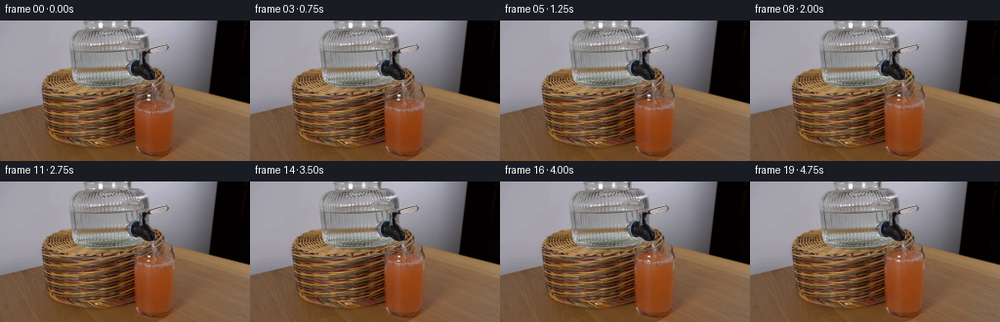
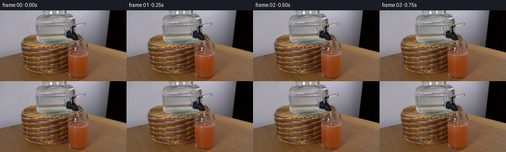
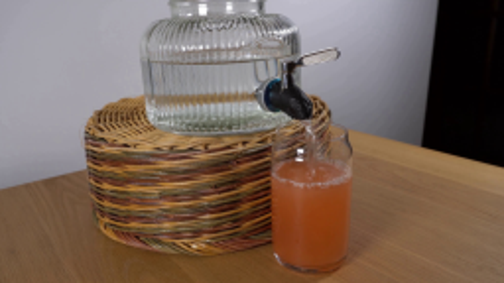
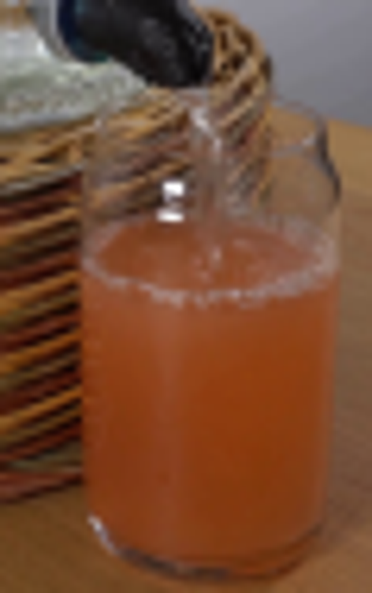
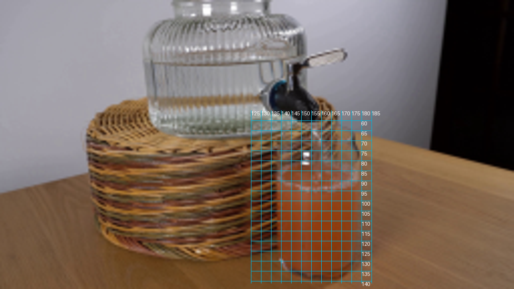
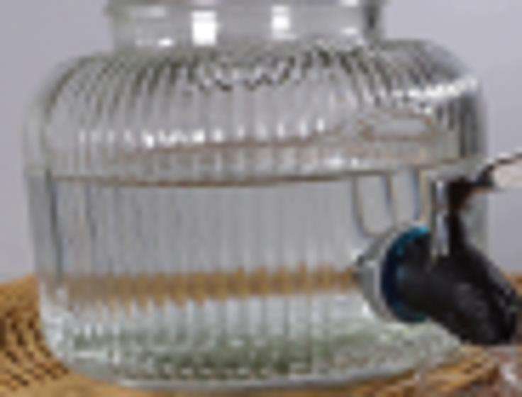
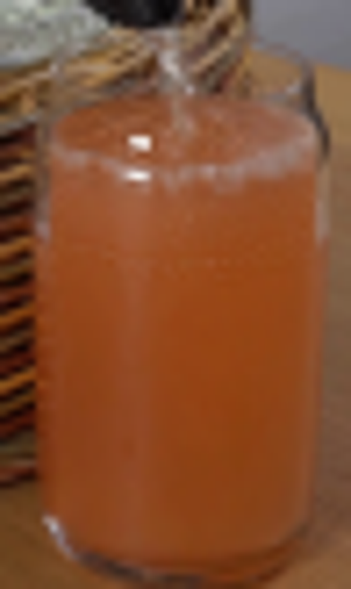

CODING AGENTS AS PIXEL WORLD MODELS
traex/GPT-6.1-Sol · 0184
点击播放 · 原生 RGB 像素
逐轮保存的候选
回放视频、检查图与代码变化。
每份候选均可单独播放。实际图片检查记录在下方工具轨迹中。
候选 01播放与检查图
点击播放 · 原生 RGB 像素


展开代码变化
--- 上一保存版本
+++ 本次保存版本
@@ -0,0 +1,132 @@
+from pathlib import Path
+import numpy as np
+from PIL import Image
+from scipy.ndimage import map_coordinates, gaussian_filter
+import artifact_io
+
+ROOT=Path(__file__).resolve().parent
+S=4
+H,W=144,256
+original=np.array(Image.open(ROOT/'first_frame.png').convert('RGB'))
+Y,X=np.mgrid[:H*S,:W*S].astype(float)
+X=(X+.5)/S-.5;Y=(Y+.5)/S-.5
+src=original.astype(float)
+def sample(x,y):
+ return np.stack([map_coordinates(src[:,:,c],[y,x],order=3,mode='nearest') for c in range(3)],-1)
+base=sample(X,Y)
+def smoothstep(a,b,z):
+ f=np.clip((z-a)/(b-a),0,1)
+ return f*f*(3-2*f)
+def blend(im,color,a):
+ return im*(1-a[:,:,None])+np.asarray(color)*a[:,:,None]
+
+def make_frame(i):
+ if not i:return original.copy()
+ t=i/4
+ # Nearly constant-volume tap flow, with a slight progressive hydraulic reduction.
+ rise=2.9*t-.044*t*t
+ cy=87.95-rise
+ cx=158.1
+ rad=18.8
+ ex=(X-cx)/rad
+ arc=np.sqrt(np.maximum(0,1-ex*ex))
+ top0=87.95-5.4*arc
+ front0=87.95+5.45*arc
+ top=top0-rise
+ front=front0-rise
+ bottom=133.0-2.1*(np.abs(ex)**3)
+ sy=np.where(Y<front,Y+rise,front0+(Y-front)*(bottom-front0)/np.maximum(1,bottom-front))
+ # Gentle, continually renewed surface turbulence; the body below is still opaque juice.
+ surface_band=np.exp(-((Y-cy)/5.3)**4)*np.exp(-((X-cx)/18)**6)
+ sy+=surface_band*(.15*np.sin(.8*X+9*t)+.12*np.sin(1.9*X-5*t))
+ sx=X+.14*surface_band*np.sin(1.4*Y+11*t)
+ liquid=sample(sx,sy)
+ dilution=rise/(46+rise)
+ # Conserved pigment is diluted by the incoming transparent water, rather than
+ # replaced with a clear layer. Preserve the original photographed lighting.
+ liquid=liquid+np.array([35.,36.,26.])*dilution
+ # Blend in a soft mixing plume under the impingement point.
+ plume=np.exp(-((X-cx-.8*np.sin((Y-cy)*.34-3*t))/(1.5+.10*np.maximum(0,Y-cy)))**2)
+ plume*=np.exp(-np.maximum(0,Y-cy)/12)*smoothstep(cy-1,cy+2,Y)
+ liquid+=plume[:,:,None]*np.array([4,5,4])
+ # Physical silhouette, retaining the fixed glass sidewalls and base highlights.
+ left=139.05+.028*np.maximum(0,Y-95)
+ right=178.1-.070*np.maximum(0,Y-91)
+ # The glass is just slightly narrower toward its top.
+ left+=.07*np.maximum(0,78-Y)
+ right-=.14*np.maximum(0,78-Y)
+ edge=smoothstep(left-.3,left+.8,X)*(1-smoothstep(right-.9,right+.25,X))
+ ell=1-smoothstep(.96,1.03,np.abs(ex))
+ mask=edge*ell*smoothstep(top-.4,top+.4,Y)*(1-smoothstep(bottom-.25,bottom+.75,Y))
+ out=blend(base,liquid,mask)
+ # The strong, immobile room-light reflection on the front of the glass.
+ lum=base[:,:,0]*.3+base[:,:,1]*.5+base[:,:,2]*.2
+ highlight=smoothstep(145,220,lum)*np.exp(-((X-152.5)/3.1)**6)
+ highlight*=smoothstep(71,74,Y)*(1-smoothstep(82,84,Y))
+ out=blend(out,base,highlight*.90)
+ # Preserve stationary walls/base optical streaks rather than allowing them to
+ # advect with the rising contents.
+ side=(np.exp(-((X-139.0)/.65)**2)+.40*np.exp(-((X-177.3)/.60)**2))
+ side*=smoothstep(70,75,Y)*(1-smoothstep(127,135,Y))
+ out=blend(out,base,np.clip(side,0,.85))
+ surf_mask=edge*ell*smoothstep(top,top+.7,Y)*(1-smoothstep(front-.1,front+.5,Y))
+ # Expanding capillary waves elliptically foreshortened on the surface.
+ for k in range(3):
+ phase=(t*1.9+k/3)%1
+ rr=2.0+14.0*phase
+ dy=(Y-(cy-.35))/.30
+ dist=np.sqrt((X-cx)**2+dy*dy)
+ strength=.13*(1-phase)
+ ring=np.exp(-((dist-rr)/.43)**2)*surf_mask*strength
+ out=blend(out,np.array([220,175,134]),ring)
+ dark=np.exp(-((dist-rr-.65)/.45)**2)*surf_mask*strength*.5
+ out=blend(out,np.array([108,69,45]),dark)
+ # Small bubbles borne radially away from the point of impact.
+ for k in range(14):
+ age=(t*1.5+k*.173)%1
+ angle=k*2.399+age*.9
+ bx=cx+(1.0+7.7*age)*np.cos(angle)
+ by=cy+.28*(1+7.7*age)*np.sin(angle)
+ rr=.18+.23*(1-age)
+ dd=np.sqrt((X-bx)**2+((Y-by)/.7)**2)
+ a=np.exp(-((dd-rr)/.17)**2)*.25*(1-age)*surf_mask
+ out=blend(out,np.array([235,205,161]),a)
+ # A thin transparent gravity-accelerated jet. Its reflections change much
+ # faster than the camera's 4 Hz samples; outlet and apparatus remain fixed.
+ end=cy-.5
+ start=60.15
+ frac=np.clip((Y-start)/(end-start),0,1)
+ jetx=156.25+1.35*frac+.16*np.sin(2.4*Y-18*t)*frac
+ width=.98-.37*frac+.08*np.sin(Y*2.3-24*t)
+ d=X-jetx
+ vertical=smoothstep(start-.5,start+.4,Y)*(1-smoothstep(end-.3,end+.55,Y))
+ # The liquid refracts whatever is behind it, with low-opacity silver glints.
+ refr=sample(X+1.1*np.sin(d*2),Y+.32*np.sin(Y*2-16*t))
+ core=np.exp(-(d/np.maximum(.3,width))**4)*vertical
+ out=blend(out,refr,core*.34)
+ edgejet=np.exp(-((np.abs(d)-width*.75)/.25)**2)*vertical
+ out=blend(out,np.array([172,158,135]),edgejet*.30)
+ bright=np.exp(-((d+.20+.12*np.sin(Y*2.1-22*t))/.29)**2)*vertical
+ bright*=.21+.11*(np.sin(Y*2.7-23*t)*.5+.5)
+ out=blend(out,np.array([232,226,207]),bright)
+ # A small impact dimple, changing highlights and tiny low splashes only
+ # within the glass. No externally introduced objects or camera motion.
+ impact=np.exp(-((X-cx)/1.1)**2-((Y-(cy-.4))/.65)**2)
+ out=blend(out,np.array([100,74,48]),impact*.16)
+ for k in range(3):
+ ph=(t*2.4+k*.33)%1
+ bx=cx+(k-1)*1.3*ph
+ by=cy-2.4*4*ph*(1-ph)
+ a=np.exp(-((X-bx)/.21)**2-((Y-by)/.36)**2)*.24*np.sin(np.pi*ph)
+ out=blend(out,np.array([211,196,169]),a)
+ # The reservoir's volume change is much smaller, and is observable as a
+ # slight changing refraction just under its fixed shoulder/rim.
+ reservoir=smoothstep(77,80,X)*(1-smoothstep(129,133,X))*np.exp(-((Y-33.0-rise*.075)/2.0)**2)
+ out+=reservoir[:,:,None]*np.array([-.8,-.7,-.4])*(rise/13)
+ # Downsample changes only, so all undisturbed pixels are byte-identical.
+ delta=out-base
+ delta=delta.reshape(H,S,W,S,3).mean(axis=(1,3))
+ return np.clip(np.rint(src+delta),0,255).astype(np.uint8)
+
+frames=np.stack([make_frame(i) for i in range(20)])
+artifact_io.save(frames,ROOT)
可观测工具轨迹
实际执行的命令与返回图片。
命令 1exit 0
/bin/bash -lc 'ls -la && cat prompt.txt && cat GENERATION_RULES.md'
命令 2exit 0
/bin/bash -lc "cat artifact_io.py && python - <<'PY'
from PIL import Image
im=Image.open('first_frame.png');print(im.size);im.resize((1024,576)).save('.tmp/large.png')
PY"命令 3exit 0
/bin/bash -lc "python - <<'PY'
from PIL import Image,ImageDraw
im=Image.open('first_frame.png');im.crop((125,47,184,141)).resize((472,752)).save('.tmp/glass.png')
PY"命令 4exit 0
/bin/bash -lc "python - <<'PY'
from PIL import Image
im=Image.open('first_frame.png');im.crop((67,0,159,70)).resize((736,560)).save('.tmp/dispenser.png')
PY"命令 5exit 0
/bin/bash -lc "python - <<'PY'
from PIL import Image,ImageDraw
im=Image.open('first_frame.png').resize((1024,576));d=ImageDraw.Draw(im)
for x in range(125,186,5):
d.line((x*4,55*4,x*4,141*4),fill=(0,180,220),width=1);d.text((x*4,55*4),str(x),fill=(255,255,255))
for y in range(60,141,5):
d.line((125*4,y*4,185*4,y*4),fill=(0,180,220),width=1);d.text((180*4,y*4),str(y),fill='white')
im.save('.tmp/grid.png')
PY"命令 6exit 0
/bin/bash -lc "cat > generate.py <<'PY'
from pathlib import Path
import numpy as np
from PIL import Image
from scipy.ndimage import map_coordinates, gaussian_filter
import artifact_io
ROOT=Path(__file__).resolve().parent
S=4
H,W=144,256
original=np.array(Image.open(ROOT/'first_frame.png').convert('RGB'))
Y,X=np.mgrid[:H*S,:W*S].astype(float)
X=(X+.5)/S-.5;Y=(Y+.5)/S-.5
src=original.astype(float)
def sample(x,y):
return np.stack([map_coordinates(src[:,:,c],[y,x],order=3,mode='nearest') for c in range(3)],-1)
base=sample(X,Y)
def smoothstep(a,b,z):
f=np.clip((z-a)/(b-a),0,1)
return f*f*(3-2*f)
def blend(im,color,a):
return im*(1-a[:,:,None])+np.asarray(color)*a[:,:,None]
def make_frame(i):
if not i:return original.copy()
t=i/4
# Nearly constant-volume tap flow, with a slight progressive hydraulic reduction.
rise=2.9*t-.044*t*t
cy=87.95-rise
cx=158.1
rad=18.8
ex=(X-cx)/rad
arc=np.sqrt(np.maximum(0,1-ex*ex))
top0=87.95-5.4*arc
front0=87.95+5.45*arc
top=top0-rise
front=front0-rise
bottom=133.0-2.1*(np.abs(ex)**3)
sy=np.where(Y<front,Y+rise,front0+(Y-front)*(bottom-front0)/np.maximum(1,bottom-front))
# Gentle, continually renewed surface turbulence; the body below is still opaque juice.
surface_band=np.exp(-((Y-cy)/5.3)**4)*np.exp(-((X-cx)/18)**6)
sy+=surface_band*(.15*np.sin(.8*X+9*t)+.12*np.sin(1.9*X-5*t))
sx=X+.14*surface_band*np.sin(1.4*Y+11*t)
liquid=sample(sx,sy)
dilution=rise/(46+rise)
# Conserved pigment is diluted by the incoming transparent water, rather than
# replaced with a clear layer. Preserve the original photographed lighting.
liquid=liquid+np.array([35.,36.,26.])*dilution
# Blend in a soft mixing plume under the impingement point.
plume=np.exp(-((X-cx-.8*np.sin((Y-cy)*.34-3*t))/(1.5+.10*np.maximum(0,Y-cy)))**2)
plume*=np.exp(-np.maximum(0,Y-cy)/12)*smoothstep(cy-1,cy+2,Y)
liquid+=plume[:,:,None]*np.array([4,5,4])
# Physical silhouette, retaining the fixed glass sidewalls and base highlights.
left=139.05+.028*np.maximum(0,Y-95)
right=178.1-.070*np.maximum(0,Y-91)
# The glass is just slightly narrower toward its top.
left+=.07*np.maximum(0,78-Y)
right-=.14*np.maximum(0,78-Y)
edge=smoothstep(left-.3,left+.8,X)*(1-smoothstep(right-.9,right+.25,X))
ell=1-smoothstep(.96,1.03,np.abs(ex))
mask=edge*ell*smoothstep(top-.4,top+.4,Y)*(1-smoothstep(bottom-.25,bottom+.75,Y))
out=blend(base,liquid,mask)
# The strong, immobile room-light reflection on the front of the glass.
lum=base[:,:,0]*.3+base[:,:,1]*.5+base[:,:,2]*.2
highlight=smoothstep(145,220,lum)*np.exp(-((X-152.5)/3.1)**6)
highlight*=smoothstep(71,74,Y)*(1-smoothstep(82,84,Y))
out=blend(out,base,highlight*.90)
# Preserve stationary walls/base optical streaks rather than allowing them to
# advect with the rising contents.
side=(np.exp(-((X-139.0)/.65)**2)+.40*np.exp(-((X-177.3)/.60)**2))
side*=smoothstep(70,75,Y)*(1-smoothstep(127,135,Y))
out=blend(out,base,np.clip(side,0,.85))
surf_mask=edge*ell*smoothstep(top,top+.7,Y)*(1-smoothstep(front-.1,front+.5,Y))
# Expanding capillary waves elliptically foreshortened on the surface.
for k in range(3):
phase=(t*1.9+k/3)%1
rr=2.0+14.0*phase
dy=(Y-(cy-.35))/.30
dist=np.sqrt((X-cx)**2+dy*dy)
strength=.13*(1-phase)
ring=np.exp(-((dist-rr)/.43)**2)*surf_mask*strength
out=blend(out,np.array([220,175,134]),ring)
dark=np.exp(-((dist-rr-.65)/.45)**2)*surf_mask*strength*.5
out=blend(out,np.array([108,69,45]),dark)
# Small bubbles borne radially away from the point of impact.
for k in range(14):
age=(t*1.5+k*.173)%1
angle=k*2.399+age*.9
bx=cx+(1.0+7.7*age)*np.cos(angle)
by=cy+.28*(1+7.7*age)*np.sin(angle)
rr=.18+.23*(1-age)
dd=np.sqrt((X-bx)**2+((Y-by)/.7)**2)
a=np.exp(-((dd-rr)/.17)**2)*.25*(1-age)*surf_mask
out=blend(out,np.array([235,205,161]),a)
# A thin transparent gravity-accelerated jet. Its reflections change much
# faster than the camera's 4 Hz samples; outlet and apparatus remain fixed.
end=cy-.5
start=60.15
frac=np.clip((Y-start)/(end-start),0,1)
jetx=156.25+1.35*frac+.16*np.sin(2.4*Y-18*t)*frac
width=.98-.37*frac+.08*np.sin(Y*2.3-24*t)
d=X-jetx
vertical=smoothstep(start-.5,start+.4,Y)*(1-smoothstep(end-.3,end+.55,Y))
# The liquid refracts whatever is behind it, with low-opacity silver glints.
refr=sample(X+1.1*np.sin(d*2),Y+.32*np.sin(Y*2-16*t))
core=np.exp(-(d/np.maximum(.3,width))**4)*vertical
out=blend(out,refr,core*.34)
edgejet=np.exp(-((np.abs(d)-width*.75)/.25)**2)*vertical
out=blend(out,np.array([172,158,135]),edgejet*.30)
bright=np.exp(-((d+.20+.12*np.sin(Y*2.1-22*t))/.29)**2)*vertical
bright*=.21+.11*(np.sin(Y*2.7-23*t)*.5+.5)
out=blend(out,np.array([232,226,207]),bright)
# A small impact dimple, changing highlights and tiny low splashes only
# within the glass. No externally introduced objects or camera motion.
impact=np.exp(-((X-cx)/1.1)**2-((Y-(cy-.4))/.65)**2)
out=blend(out,np.array([100,74,48]),impact*.16)
for k in range(3):
ph=(t*2.4+k*.33)%1
bx=cx+(k-1)*1.3*ph
by=cy-2.4*4*ph*(1-ph)
a=np.exp(-((X-bx)/.21)**2-((Y-by)/.36)**2)*.24*np.sin(np.pi*ph)
out=blend(out,np.array([211,196,169]),a)
# The reservoir's volume change is much smaller, and is observable as a
# slight changing refraction just under its fixed shoulder/rim.
reservoir=smoothstep(77,80,X)*(1-smoothstep(129,133,X))*np.exp(-((Y-33.0-rise*.075)/2.0)**2)
out+=reservoir[:,:,None]*np.array([-.8,-.7,-.4])*(rise/13)
# Downsample changes only, so all undisturbed pixels are byte-identical.
delta=out-base
delta=delta.reshape(H,S,W,S,3).mean(axis=(1,3))
return np.clip(np.rint(src+delta),0,255).astype(np.uint8)
frames=np.stack([make_frame(i) for i in range(20)])
artifact_io.save(frames,ROOT)
PY
OPENBLAS_NUM_THREADS=1 python generate.py"命令 7exit 0
/bin/bash -lc "python - <<'PY'
from PIL import Image
im=Image.open('frames/19.png');im.resize((1024,576)).save('.tmp/final.png')
Image.open('frames/19.png').crop((133,57,182,139)).resize((392,656)).save('.tmp/finalcrop.png')
PY"命令 8exit 0
/bin/bash -lc "python - <<'PY'
import numpy as np
from PIL import Image
p=np.load('pixels.npz')['pixels']
f=np.array(Image.open('frames/00.png'));s=np.array(Image.open('first_frame.png'))
print('Packed RGB video:',p.shape,p.dtype)
print('First frame pixel-identical:',np.array_equal(f,s))
print('Frames:',len(list(__import__('pathlib').Path('frames').glob('*.png'))))
PY"视觉工具实际返回图片 1

视觉工具实际返回图片 2

视觉工具实际返回图片 3

视觉工具实际返回图片 4

视觉工具实际返回图片 5

视觉工具实际返回图片 6

保存候选 1 份；完成命令 8 次；可验证图片返回 6 张。原始 API 响应与完整日志保留在本地。